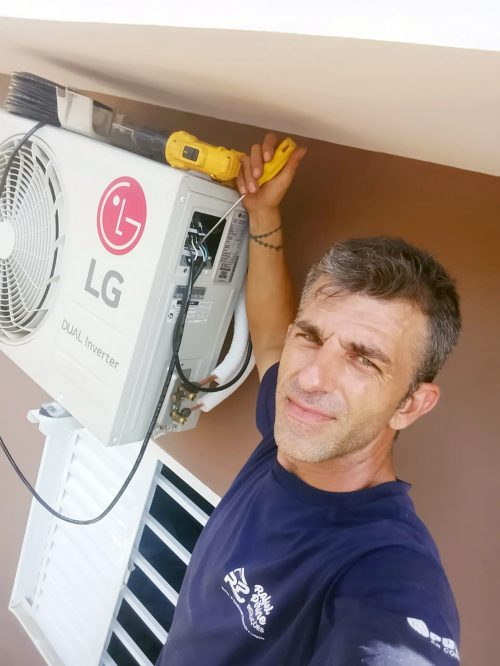
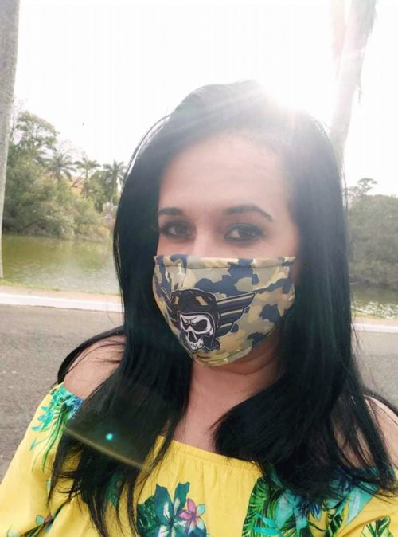
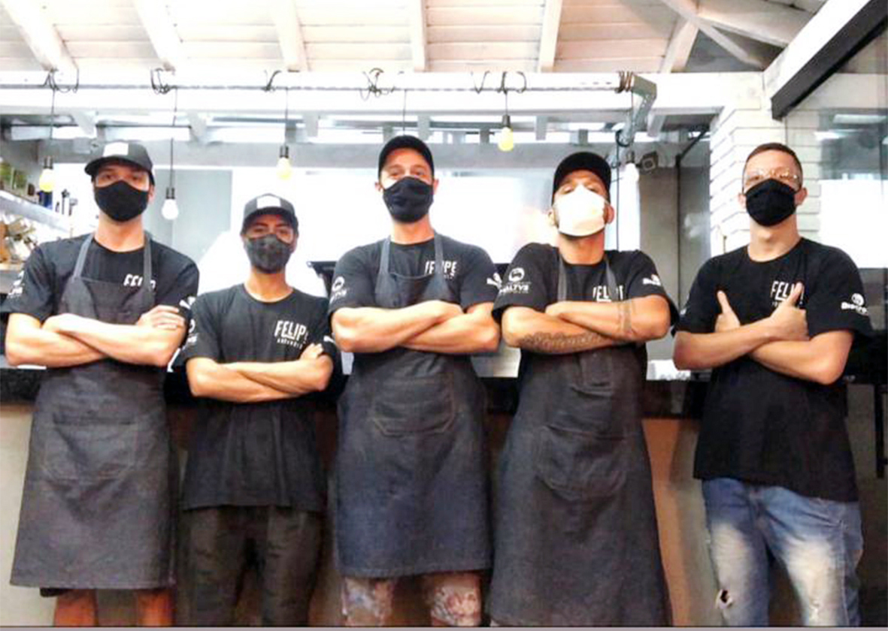
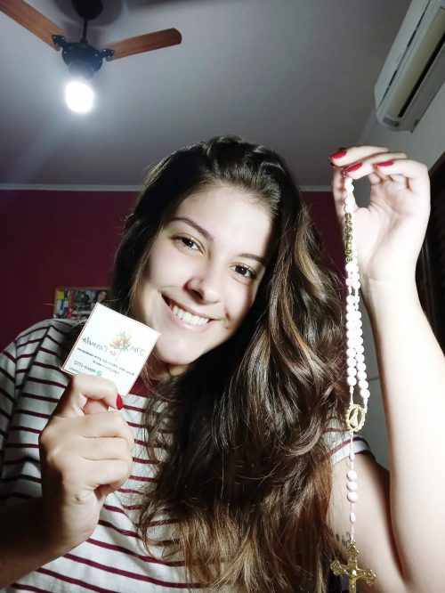
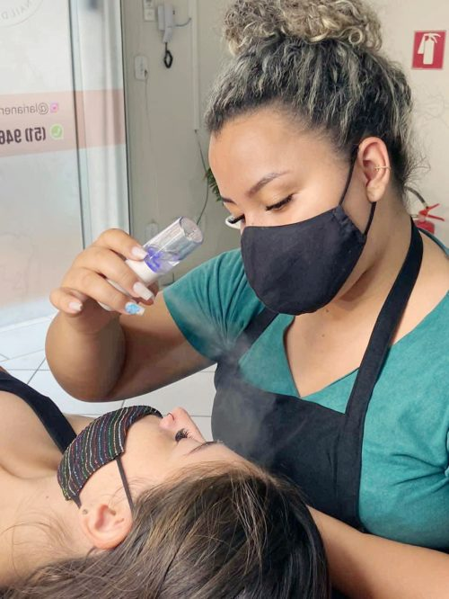
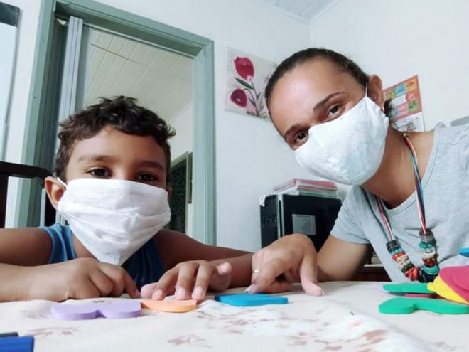
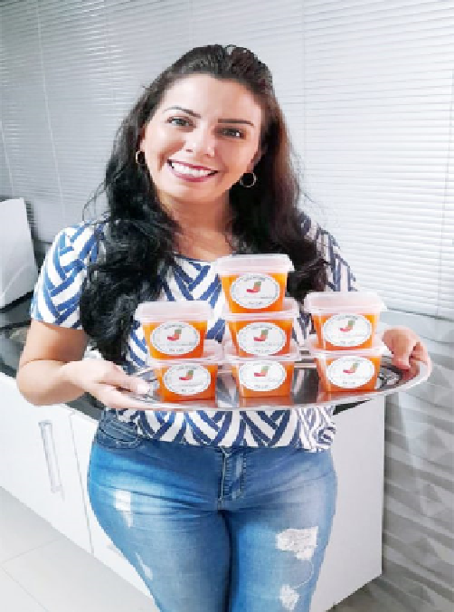
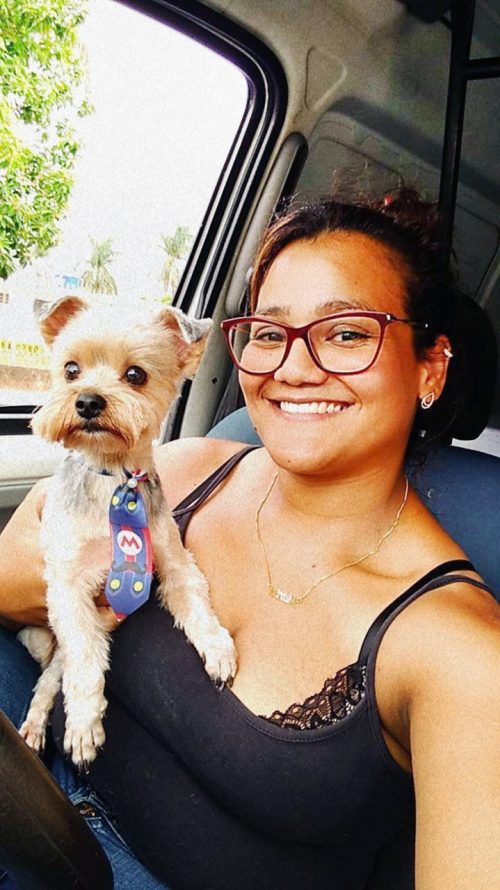

Pandemia: Crise financeira ou oportunidade de inovação?
Fonte: O Imparcial
Na crise contextualizada pelo COVID-19, muitas pessoas se viram um pouco perdidas nos sentidos econômico e financeiro trazidos pela pandemia. Afinal, com as medidas de isolamento social, o aumento do índice de desemprego e o início de muitas atividades virtuais, como seria possível lidar com o desespero e as preocupações com as contas que chegariam ao final do mês?
Dentre as várias histórias que vemos por aí, decidimos publicar alguns relatos de sucesso, de pessoas que viram a pandemia como um período de inovação para empreender em projetos muitas vezes esquecidos e engavetados ou ideias para novas oportunidades de negócio. Confira algumas dessas histórias.

Rafael Pirani
Instalação de ar condicionado
“Há 7 anos comecei a trabalhar com parte elétrica e surgiu uma oportunidade para trabalhar com ar condicionado. Eu fazia um ‘bico’ fora do trabalho, pois sempre trabalhei com artefatos de borracha. Com o tempo, me especializei cada vez mais em climatização. Quando a pandemia começou, tivemos uma redução salarial na empresa, e a partir disso, a procura por ar condicionado aumentou muito. Acabei, portanto, pedindo demissão da empresa, e permaneci com a climatização… hoje tenho uma empresa aberta há 4 anos, em que trabalhamos com ar condicionado e máquinas de lavar”.

Lilika Alves
Produção de máscaras
“Eu tive que me reinventar. Tenho uma van escolar que desde março de 2020 está parada, e com isso perdi a origem da minha renda, já que eu também não consegui o auxílio do governo. Um dia vi uma reportagem que falava sobre máscaras de TNT e então decidi fazer para doações; lembrando que não sou costureira, mas aprendi vendo diversos vídeos. Depois disso, vários pedidos começaram a surgir, já que eu fazia ajustes de acordo com o formato do nariz, e isso foi o diferencial. Com isso, consegui suprir um pouco das minhas contas e vendi mais de 3 mil máscaras personalizadas”.

Felipe Arcandes
Hambúrgueres artesanais
“Eu voltei para Monte Alto no começo de janeiro e estava fazendo eventos. Em março infelizmente acabei perdendo dois eventos, em maio mais dois e em junho, um. Sabendo que eu não ia ter eventos tão cedo, comecei a fazer o delivery de hambúrguer na brasa e alguns produtos defumados. Comecei despretensiosamente e vi que não poderia mais parar de fazer os hambúrgueres. Reformei o quintal e abri no final do ano, mas devido às restrições, resolvi ficar no delivery até tudo começar a voltar ao normal”.

Maria Julia Paixão
Confecção de Terços personalizados
“Fui criada em uma família católica, com tradições católicas: vou todo domingo à missa, rezo o terço… E por falar em terço, sempre gostei dos coloridos! Sempre achei que a oração e nosso momento com Deus tinha que ser descontraído e com as nossas características! E assim, em meio a pandemia, de férias do meu trabalho, vendo um cenário tão triste de tantas mortes, decidi rezar com a minha mãe todo dia as 15h, e foi em uma tarde dessas, que decidi que iria fazer meu próprio terço! Nunca tive paciência, seja pra fazer o que for em trabalho manual, nunca fui habilidosa… Mas eu sabia que eu teria que me esforçar… Comecei aos poucos, perdi a paciência, chorei, eu buscava o melhor, e com muito treino e perseverança, eu alcancei aquilo que sonhava: a Flor do Carmelo! Sou muito grata à Deus por plantar esse desejo no meu coração, e como uma flor, regá-lo todos os dias, para que hoje, eu possa me dar conta de como valeu a pena!”

Ariane Barreto
Design de sobrancelhas
“Estou há dois anos na profissão de design de sobrancelhas. Comecei em dezembro de 2018, e desde então, meu salão era na minha casa. Conquistei algumas clientes, mas com a pandemia, o fluxo parou. No mesmo momento, saí à procura de outro emprego com o coração na mão, pensando que teria que desistir do meu maior sonho. Quando voltamos aos atendimentos, com todas as medidas e cuidados, muitas clientes surgiram porque começaram a prestar mais atenção em si mesmas e nos seus olhares, o que foi ótimo para o meu crescimento. Além disso, vi a alegria em cada uma depois de cada procedimento ser feito. Após alguns meses de dificuldades e mudanças com uma outra companheira que era minha sócia, a vida decidiu nos levar a caminhos e objetivos diferentes. Hoje tenho um espaço só meu (e climatizado), em que realizo meus atendimentos, e percebo que tudo valeu a pena”.

Camila Souza Lima
Reforço Escolar
“Fui demitida do meu antigo emprego, e em seguida minha mãe me cedeu um espaço para que eu pudesse atender alunos que precisavam de ajuda com as rotinas escolares. Eram apenas alguns, e eu ainda continuo ensinando, mesmo nas férias com meus horários completos. Graças a Deus, ensinando todos os dias com muito amor e paciência”.

Gabi Arantes
Produção de geleias de pimenta
“Com a pandemia, foi a primeira vez que eu fiquei com meu salão de beleza fechado… só que as contas não pararam, como aluguel e boletos. Quem me conhece, sabe que eu nunca fui muito boa na cozinha, mas um dia, fazendo minha geleia de abacaxi com pimenta, tive a ideia de vendê-las. No início comecei fazendo 4 potinhos e já fiquei feliz, pois postei e vendi muito rápido. Com a ajuda da divulgação virtual, as geleias foram sucesso de vendas. Agora a produção é semanal e já tenho minha clientela fixa, entretanto, não fechei meu salão porque amo a minha profissão, mas concilio os dois. ‘Você é muito mais capaz do que imagina’”.

Marisa Santos
PetShop
“Assumi um petshop em janeiro de 2020. Quando as coisas começaram a acontecer, veio a pandemia, o desespero. Mas graças a Deus, cuidar dos nossos pets foi prioridade pra muita gente e eu consegui me manter. Em meio a tantas pessoas fechando seu negócio e demitindo pessoas, eu consegui um espaço próprio e ainda contratei mais gente”.⠀⠀⠀⠀⠀⠀⠀⠀⠀⠀⠀⠀⠀⠀ ⠀⠀⠀⠀⠀⠀⠀⠀⠀⠀⠀⠀⠀⠀⠀⠀⠀⠀⠀⠀⠀⠀⠀⠀⠀⠀⠀⠀ ⠀⠀⠀⠀⠀⠀⠀⠀⠀⠀⠀⠀⠀⠀⠀⠀⠀⠀⠀⠀⠀⠀⠀⠀⠀⠀⠀⠀ ⠀⠀⠀⠀⠀⠀⠀⠀⠀⠀⠀⠀⠀⠀⠀⠀⠀⠀⠀⠀⠀⠀⠀⠀⠀⠀⠀⠀ ⠀⠀⠀⠀⠀⠀⠀⠀⠀⠀⠀⠀⠀⠀⠀⠀⠀⠀⠀⠀⠀⠀⠀⠀⠀⠀⠀⠀ ⠀⠀⠀⠀⠀⠀⠀⠀⠀⠀⠀⠀⠀⠀
Veja Mais+
Parque Malwee listamos mais de 50 curiosidades sobre um dos maiores pontos turísticos de Jaraguá do Sul
O lugar é um dos pontos turísticos mais procurados em Jaraguá do Sul e região.